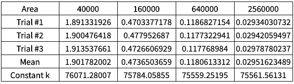
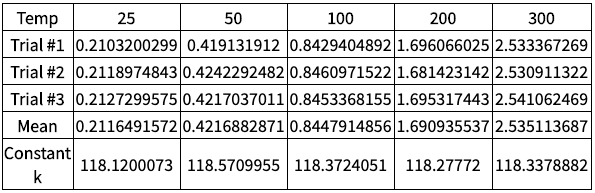
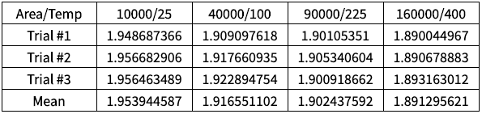

Modeling the Gas Laws with a Simulation
The Kinetic Molecular Theory (KMT) is a set of postulates that help explain why gasses follow the ideal gas law: PV = nRT.
I decided to create a 2D model of an ideal gas that follows the Kinetic Molecular Theory using the pygame module in python, whereby I could specify the area of the “container”, the number of particles, as well as the average kinetic energy of the particles.
In this simulation, I did not attempt to use real-life units. Rather, I used arbitrary units, which was sufficient for my purpose.
Building the Gas Model
In order to create a gas model, I first needed to create a simple physics module that would simulate elastic collisions with circle objects. To accomplish this, I drew heavily from this tutorial by Peter Collingridge, basing the fundamental structure of my program from this resource. Below are some of the things I added or modified in order to make my program suit my purpose.
Collisions
I changed the collision function as this existing collision function did not produce accurate results in certain scenarios, especially when a collision occurred between two particles going in the same general direction (i.e. a rear-end collision).
I solved this problem using velocity vectors. In these elastic collisions, I would create two scalar values for each particle: a velocity value in the normal direction and one in the tangential direction. These would be derived from the normal and tangential vectors. The tangential velocity value wouldn’t change as it is perpendicular to the collision, and there wouldn’t be any forces affecting it. The normal velocity would basically undergo a one-dimensional elastic collision, where both the kinetic energy and momentum are conserved.
This document by Chad Bercheck explains this process in more depth. The Wikipedia article on elastic collisions is helpful as well.
Kinetic Energy, and Velocity
Initially, this program only had a speed variable along with a value that determined the angle. In this program, however, I wanted to use temperature as one of the metrics, simply because this was one of the variables in the ideal gas law.
I implemented this idea by making the program accept an input for temperature; the speed would simply be the square root of the temperature. This is because velocity is proportional to the square root of kinetic energy (as seen in \(KE= {1 \over 2} mv^2\)). Kinetic energy, in turn, is directly proportional to temperature.
Pressure
Finding the pressure is relatively simple; the program has to find the force exerted against the wall and divide it by the perimeter of the container (adapted from \(P={F \over A}\) as the model is in two-dimensions). I found the force from the equation \(F={\Delta p \over \Delta t}\). The change in momentum is given by the value 2mv(only the x-component of the velocity should be taken into account when hitting the vertical walls, and only the y-component of the velocity should be taken into account when hitting the horizontal walls). The only adjustment to make is to use the number of frames (or screen updates) as a measurement of time rather than actual time in seconds, as each frame takes a different amount of time to be calculated and load, which would produce inconsistent results.
So, the final expression would be the change in momentum, which would be the sum of all changes in momentum for each individual collision, divided by the number of frames and the perimeter.
This article explains some of the concepts described here.
Initial Conditions
The initial conditions are either determined by the user or randomized. The adjustable variables are temperature, number of particles, the dimensions of the container, the radius of the particles, and the mass of the particles. The dimensions must be specified, while the radius, the mass, and the total number of the particles would default to 1 if unspecified. The temperature would be randomized if unspecified.
During the simulation, a graph that shows the distribution of the velocities of particles would be shown, and the pressure would be printed at the end of the simulation.
Verifying Gas Laws
Certain gas laws could be verified using the results of the model.
Boyle’s Law
I ran the simulation with 150 particles and a temperature of 100, while varying the dimensions to adjust the area. If the model followed Boyle’s law, the pressure should be inversely proportional to the area, which would produce a constant k when the pressure and area are multiplied.
Data
Mean k=75744.03797
Standard Dev=242.3032857
Relative Standard Dev=0.32%
The data produced a constant k of around 76000, demonstrating Boyle’s law.
Gay-Lussac’s Law
I ran the simulation with 150 particles and an area of 90000 (300 by 300), while varying the temperature. If the model followed Gay-Lussac’s law, the pressure should be proportional to the temperature, which would produce a constant k when the temperature is divided by the pressure.
Data
Mean k=118.3358032
Standard Dev=0.1632490347
Relative Standard Dev=0.14%
The data produced a constant k of around 118, demonstrating Gay-Lussac’s law.
Charles’ Law
I ran the simulation with 150 particles, while varying the temperature and area. I adjusted the temperature and area such that the ratio between the two would remain the same. This would establish V1T1=V2T2. If the model followed Gay-Lussac’s law, the other variables would remain constant, including pressure.
Data
Mean Pressure=1.916057225
Standard Dev=0.02729058177
Relative Standard Dev=1.42%
The pressure remained relatively constant throughout the trials, demonstrating Charles’ law.